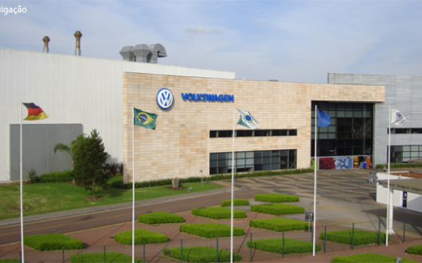

VOLKSWAGENFABRIEK - SÃO JOSÉ DOS PINHAIS PR

A Reditech realizou a programação no padrão VASS da nova linha de transportadores no setor de armação da Volkswagen Curitiba para a produção do T-Cross.
Dentro do escopo de fornecimento foi contemplado:
- Programação dos CLP;
- Desenvolvimento de lógica e IHM de operação para os novos transportadores.
O projeto consistiu na programação e startup de 6 linhas de transportadores que vão desde o fornecimento de skids até a montagem final do carro, totalizando mais de 1000 metros de transportadores.
“A Reditech realizou a programação no padrão VASS da nova linha de transportadores no setor de armação da Volkswagen Curitiba para a produção do T-Cross.”